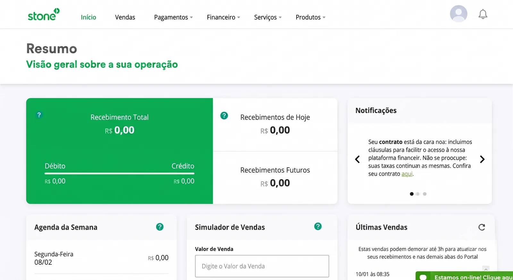
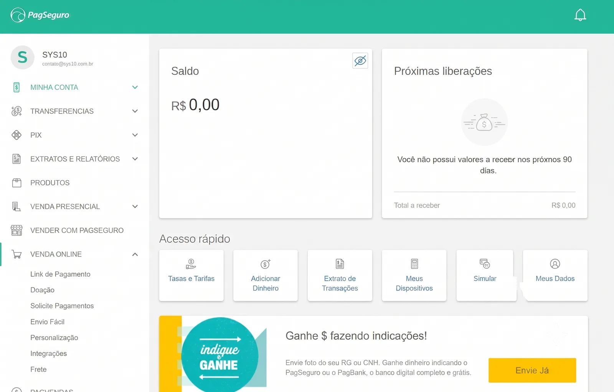

PayGo · C6 Bank · 2020–2021
Management portal for C6 Pay merchants
When PayGo joined the C6 Bank ecosystem, the portal became part of the financial routine of thousands of merchants while still following the legacy system’s logic. My work was to bring that structure closer to merchants’ daily needs within what the platform could deliver.
−28% less time on screen

Screens and rules accumulated in the legacy system
The portal had grown in layers, with screens and rules added as operations demanded, leaving sales, receivables, and history organized around the system’s internal structure rather than the sequence merchants used at cash close.


User experience
- Unintuitive navigation
- Confusing information architecture
- Low priority given to financial information
- Excessive cognitive load on screens
- Long flows for recurring tasks
Business impact
- High volume of operational questions
- Frequent dependence on support
- Poor task completion efficiency
- Inconsistency with C6 Bank standards
- Weak foundation for product growth
Turning to support
Simple operational questions frequently became support tickets.
Finding sales was not enough to close the register
With the next sprints already being prepared, discovery happened within the refinements. I retraced with engineering how data reached the portal and, with PM and CX, followed the questions that became support tickets.
Merchants could find sales and receivables, but to answer “How much will I receive?” or “Does my register close today?” they still had to interpret statuses, cross-reference screens, and add the values themselves.

Helping with daily cash close
By analyzing support tickets, I identified that most questions arose during the cash close. Merchants had difficulty locating and interpreting financial information in the portal. This became the main problem of the project.
Prioritizing what really mattered
In the merchant's day-to-day operations, they needed to quickly know their financial position for that day. I reorganized the interface to give visibility to essential information and make this response immediate, without relying on tables and filters.
From the expected summary to what fit in the sprint
During low-fidelity exploration, I asked merchants what they expected to find in a “Summary” and heard that the day’s amount, total receivable, and payment dates needed to appear already calculated, often with Stone and PagBank as references.
Because time was short and not everything fit in the first sprints, I brought these learnings into refinements with engineering as they emerged. That is how “Commercial terms” became “Fees” in the menu before the rest of the project was ready.


Three decisions to answer how much I would receive
In the financial summary, values appeared in a weekly grid while sales, receivables, and history lived on other screens, forcing merchants to move between them and add up the amounts to find out what they would receive.
See what comes in today and over the next days
Instead of the weekly grid, we showed values for today, the next 7 days, and the next 30 days.
Read the cash position in one sequence
We brought financial position, value progression, and history into the same reading sequence.
Find answers before filters
The first screen answered the most frequent questions before periods, statuses, and filters were needed.
The financial position before the details
In the tickets followed by CX, finding sales and receivables was only part of the task. Merchants still had to confirm whether the amounts closed at the end of the day, which led the summary to open with the financial position and continue to the details used in the review.

Finding the sale that did not add up
When the total did not add up, merchants had to find the sale behind the difference through several searches and filter adjustments in the old screen.
I put the most-used periods above the list and kept operation and status visible in the table, close to the data used in the review.
The last synchronization time stayed at the top so merchants could confirm values were up to date before looking for a discrepancy.
CX
Close work with the customer service team to understand the merchant profile, the most recurring questions, and the main reasons for contacting support.
Engineering
Mapping the legacy system's operation to understand how data reached the portal. Many metrics required front-end calculation instead of coming pre-computed from the back-end, which was fine in some cases, but for critical metrics I needed to align with engineering before deciding what to prioritize.
Competitor analysis
Analysis of products like Stone, Stripe, and PagSeguro to understand how the market organizes financial information and build a reference base for design decisions.
User testing
Prototype validation with five merchants to verify that the main decisions actually facilitated their operation before development.

What I checked before development
Support tickets at cash closing
The concentration of tickets at cash closing defined what would enter the redesign first.
Indicator feasibility
I mapped data origin and consistency with engineering before including indicators in the first delivery.
Navigation reviewed with design
Critiques with PayGo and C6 Bank designers refined navigation and hierarchy before implementation.
Tests with merchants
I tested the order of information with five merchants before development.
Fewer tickets and a faster review
In the three months after gradual rollout, tickets about cash closing fell 36%.
With the PO, I followed behavior in Google Analytics and observed a 28% drop in average time on the sales screen, suggesting that merchants were finding and checking information with less effort.
We also adapted C6 design-system components to PayGo’s platform limits and left the squad a library for subsequent deliveries.